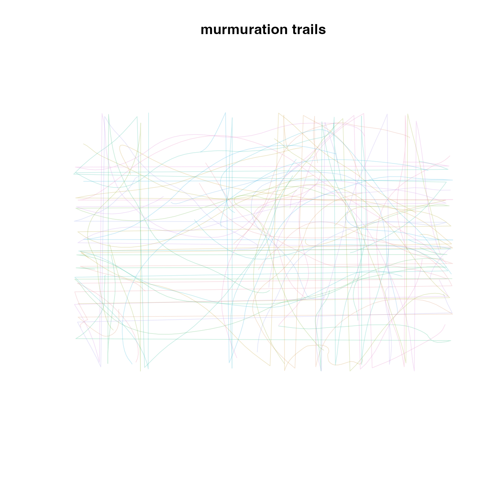
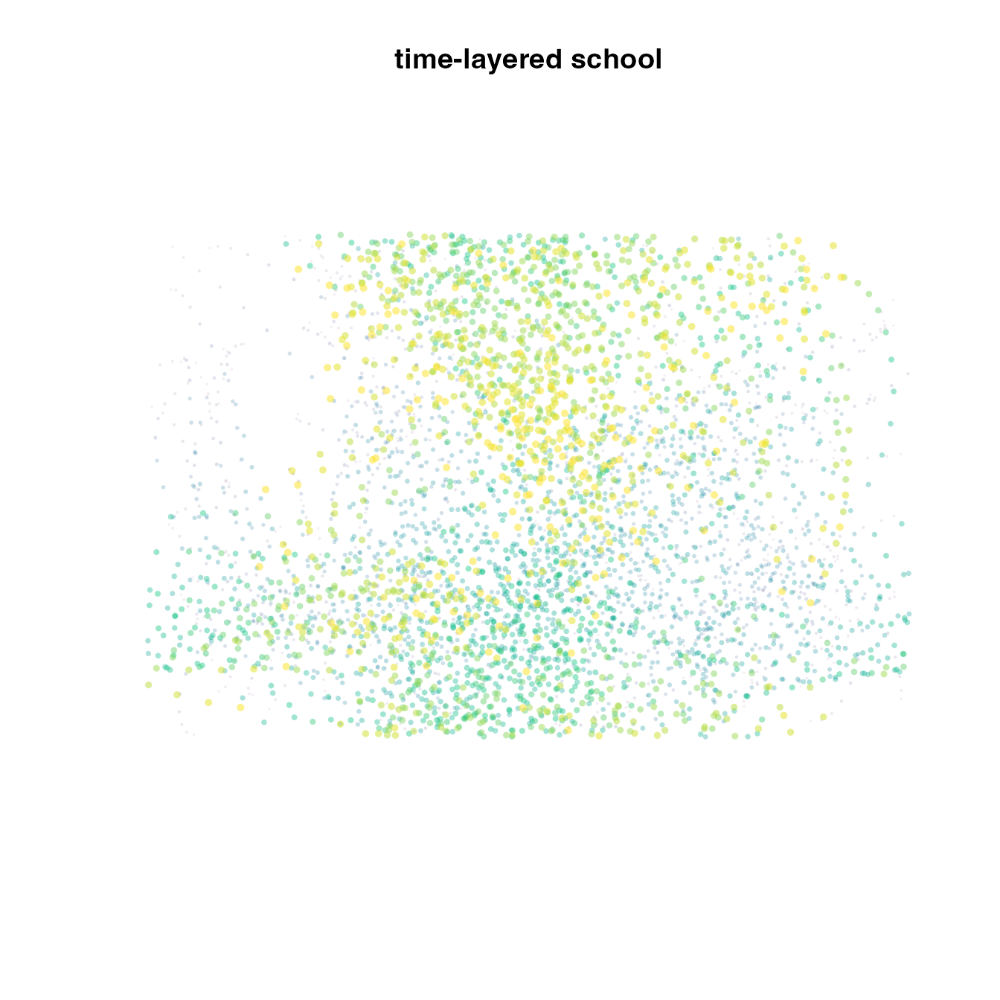
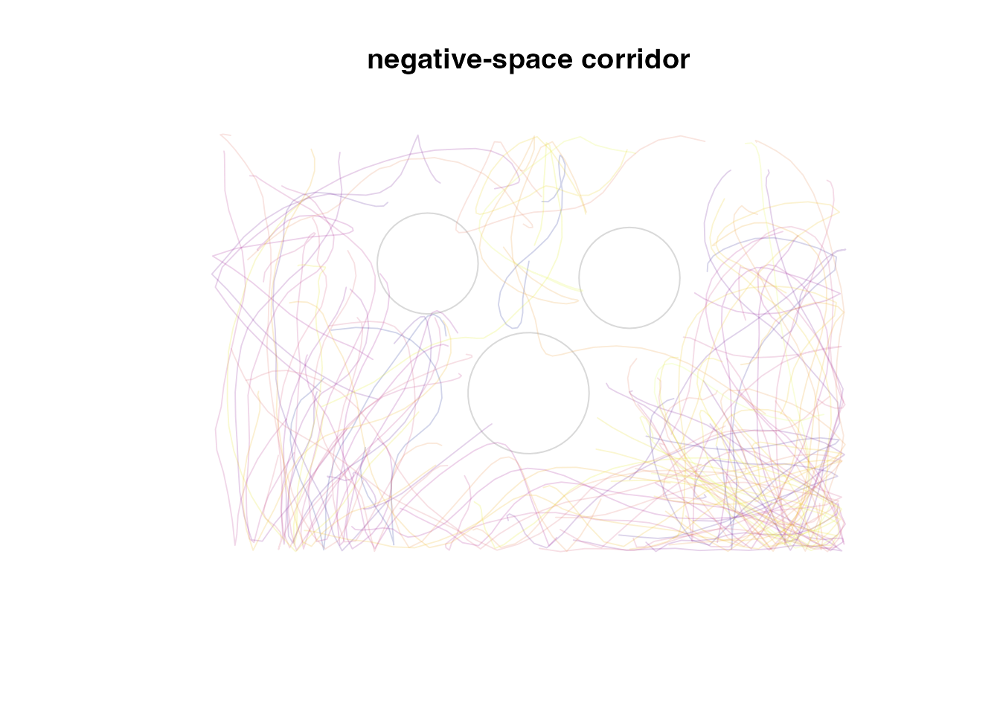
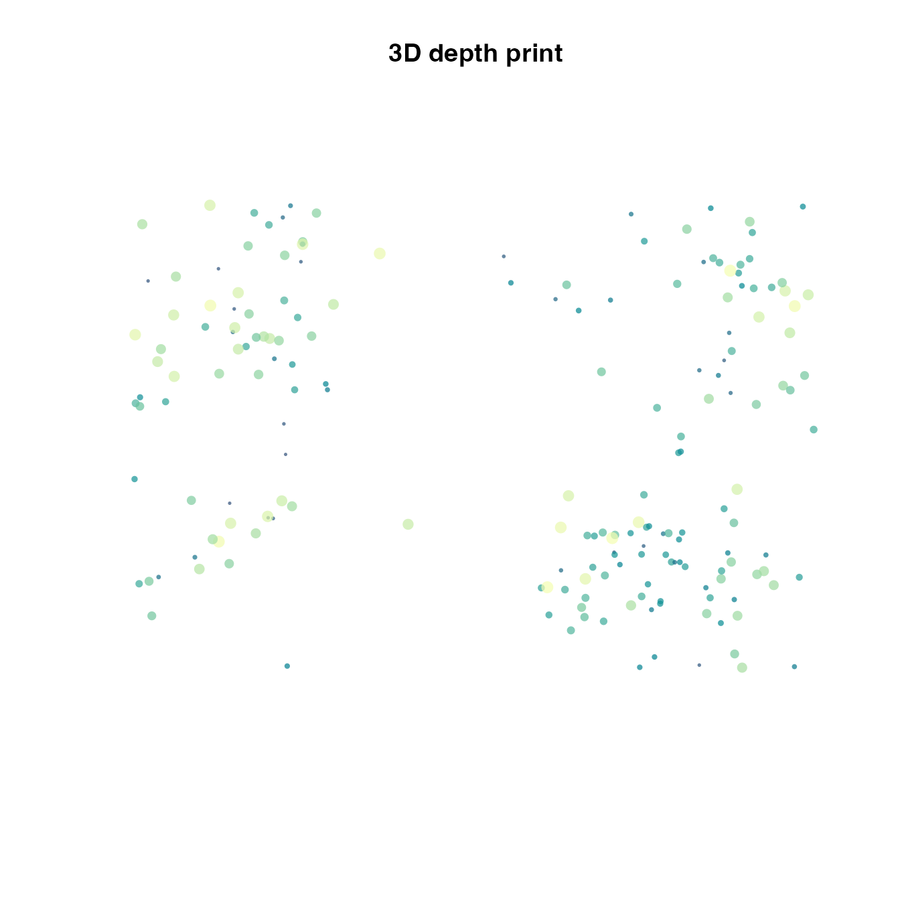

Recorded boids frames can be used as generative drawing material. This vignette keeps the simulation renderer-neutral, then turns frame tables into static artworks with base R graphics.
Helpers
frame_table <- function(sim) {
frames <- as.data.frame(sim)
frames[order(frames$id, frames$frame), , drop = FALSE]
}
world_limits <- function(sim) {
list(
xlim = sim$world$bounds["x", ],
ylim = sim$world$bounds["y", ]
)
}
draw_empty_canvas <- function(sim, title = "") {
lim <- world_limits(sim)
graphics::plot(
NA_real_, NA_real_,
xlim = lim$xlim,
ylim = lim$ylim,
asp = 1,
axes = FALSE,
xlab = "",
ylab = "",
main = title
)
}
fade_palette <- function(n, palette = "Inferno") {
grDevices::hcl.colors(n, palette)
}Trail drawing
Line trails turn motion into a dense drawing. The example below draws only a subset of boids so individual paths remain visible.
trail_sim <- boids_scenario(
"murmuration_3d",
n = 140,
steps = 95,
record_every = 2,
seed = 710
)
trail_frames <- frame_table(trail_sim)
keep_ids <- unique(trail_frames$id)[seq(1, length(unique(trail_frames$id)), by = 3)]
trail_frames <- trail_frames[trail_frames$id %in% keep_ids, , drop = FALSE]
draw_empty_canvas(trail_sim, "murmuration trails")
ids <- unique(trail_frames$id)
cols <- grDevices::adjustcolor(fade_palette(length(ids), "Dark 3"), alpha.f = 0.22)
for (i in seq_along(ids)) {
path <- trail_frames[trail_frames$id == ids[i], , drop = FALSE]
graphics::lines(path$x, path$y, col = cols[i], lwd = 0.8)
}
Time-layered particles
A different style keeps all boids but draws successive frames with increasing opacity and size. Recent frames become the bright foreground.
particle_sim <- boids_scenario(
"schooling_2d",
n = 180,
steps = 75,
record_every = 3,
seed = 720
)
particle_frames <- as.data.frame(particle_sim)
frames <- sort(unique(particle_frames$frame))
draw_empty_canvas(particle_sim, "time-layered school")
frame_cols <- vapply(
seq_along(frames),
function(i) {
grDevices::adjustcolor(
fade_palette(length(frames), "Viridis")[i],
alpha.f = seq(0.06, 0.55, length.out = length(frames))[i]
)
},
character(1)
)
for (i in seq_along(frames)) {
layer <- particle_frames[particle_frames$frame == frames[i], , drop = FALSE]
graphics::points(layer$x, layer$y, pch = 16, cex = 0.25 + 0.45 * i / length(frames), col = frame_cols[i])
}
Negative-space obstacles
Obstacle and predator avoidance can produce visual gaps. Here the obstacles are drawn as quiet negative-space forms under the flock traces.
negative_sim <- boids_scenario(
"obstacle_corridor_2d",
n = 170,
steps = 85,
record_every = 3,
seed = 730
)
negative_frames <- frame_table(negative_sim)
negative_ids <- unique(negative_frames$id)[seq(1, length(unique(negative_frames$id)), by = 2)]
negative_frames <- negative_frames[negative_frames$id %in% negative_ids, , drop = FALSE]
draw_empty_canvas(negative_sim, "negative-space corridor")
for (i in seq_len(nrow(negative_sim$world$obstacles))) {
graphics::symbols(
negative_sim$world$obstacles$x[i],
negative_sim$world$obstacles$y[i],
circles = negative_sim$world$obstacles$radius[i],
inches = FALSE,
add = TRUE,
bg = "white",
fg = "gray85"
)
}
cols <- grDevices::adjustcolor(fade_palette(length(negative_ids), "Plasma"), alpha.f = 0.18)
for (i in seq_along(negative_ids)) {
path <- negative_frames[negative_frames$id == negative_ids[i], , drop = FALSE]
graphics::lines(path$x, path$y, col = cols[i], lwd = 0.9)
}
Depth as colour
For 3D simulations, z can drive colour or point size in a 2D projection. This creates a depth print without needing a 3D renderer.
depth_sim <- boids_scenario(
"mixed_species_3d",
n = 190,
steps = 70,
record_every = 5,
seed = 740
)
depth_final <- as.data.frame(depth_sim)
depth_final <- depth_final[depth_final$frame == max(depth_final$frame), , drop = FALSE]
depth_rank <- (depth_final$z - min(depth_final$z)) / diff(range(depth_final$z))
draw_empty_canvas(depth_sim, "3D depth print")
depth_cols <- fade_palette(100, "BluYl")
graphics::points(
depth_final$x,
depth_final$y,
pch = 16,
cex = 0.35 + 0.9 * depth_rank,
col = grDevices::adjustcolor(depth_cols[pmax(1, ceiling(depth_rank * 99))], alpha.f = 0.7)
)
Exporting art
Use normal graphics devices to export a static artwork. The same
frame table can also be sent to ggWebGL when an animated
artwork is preferable.
png("swarm-art.png", width = 1800, height = 1800, res = 220)
draw_empty_canvas(trail_sim, "murmuration trails")
for (i in seq_along(ids)) {
path <- trail_frames[trail_frames$id == ids[i], , drop = FALSE]
graphics::lines(path$x, path$y, col = cols[i], lwd = 0.8)
}
dev.off()
if (requireNamespace("ggWebGL", quietly = TRUE) &&
utils::packageVersion("ggWebGL") >= "0.4.0") {
spec <- as_ggwebgl_spec(depth_sim, vector_every = 18, shader = "density_splat")
spec$render$timeline$autoplay <- TRUE
ggWebGL::ggWebGL(spec, height = 540)
}